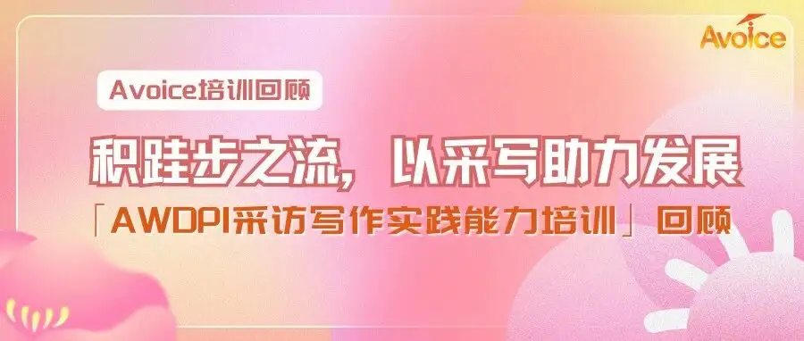
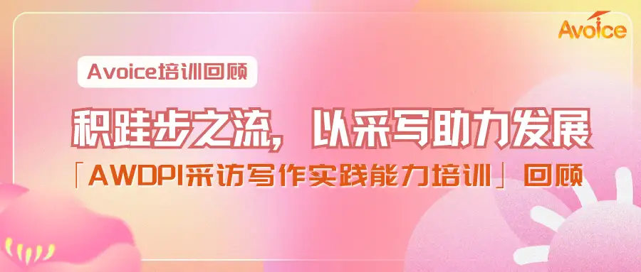
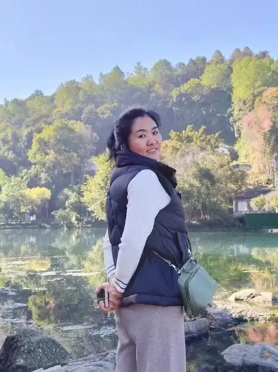
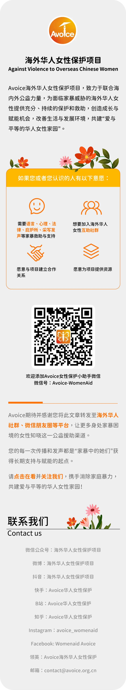

2024年4月24日，于绿柳黄莺，繁花似锦之际，2024AWDPI采访写作实践能力培训成功举办。培训由倡导关注海外亚裔女性生存困境、持续支持亚裔女性获得全面发展机会的AWDPI（Asian Women Development Plan International）亚裔女性国际发展计划主办。
AWDPI面向内部志愿者邀请了陕西省女法律工作者协会第五届副会长、高级社工师王延萍老师，国际组织传播专家田博老师，就国际组织品牌塑造和反家暴研究实践进行分享培训。此次培训搭建了内部志愿者与国际组织和家暴从业者交流的平台，旨在用传播为品牌赋能，用采写搭载研究视角推动解决家暴问题，助力亚裔女性构筑安全壁垒。
主题培训：品牌与采写

主题培训嘉宾 田博
国际组织传播专家，公益行业从业超过十五年的资深从业者田博老师，围绕品牌与采写两个方面进行分享。
田博老师首先阐述了品牌内涵、品牌构成，以及品牌基调的重要性，强调品牌并不只有外在的视觉表达，其所传递和体现的有关机构策略、价值观、表达方式等才是品牌的支柱和精髓。除了品牌的外在表达，品牌的精髓渗透于公益机构工作的方方面面——招聘、项目执行、筹款、志愿对接、宣传采写等等，因此品牌如何做、和谁做、怎么做深刻影响着品牌形象的塑造。其次，田老师将品牌形象与采写工作相联系，强调采写工作者需要站位品牌表达的高度，将品牌理念贯穿到采写的细微之处。
接着，老师结合十五年的从业经历为采写工作者提供了几项宝贵经验：一是提前熟悉与机构工作相关的全球、国家和地方政策，了解地方的文化背景；二是在采写过程中保持中立和客观，并且确保对受害者的信息和隐私予以保护；三是采写工作要注重人员分配、信息对接以及沟通合作；四是具备敏感度，并注意采写和传播环节的风险控制。
最后，田博老师从品牌角度，建议机构进一步完善品牌体系，起草和完善相关文件、注重人员培训和分工协作。
主题培训：反家暴与写作问题意识
主题培训嘉宾 王延萍
陕西省女法律工作者协会第五届副会长、高级社工师王延萍老师，结合自身反家暴社工实务和研究工作， 围绕“受访者可能是哪些人/部门/机构，我们了解多少？”和“基于反家暴议题相关理论与研究成果的视角开展采写”两大版块，对AWDPI采写处的几点需求进行回应。
首先，王延萍老师围绕家暴工作的直接服务对象（受暴妇女、加害人、目睹或遭受家庭暴力儿童），阐述了家暴定义及类型、儿童保护以及加害人类型，并从三者所处的生态环境、家暴影响、服务诉求等层面，为采写者提供了具体的问题视角。
其次，老师围绕“反家暴三级预防和干预”，以“反家暴如何联动才能有效”一文为例，陈述了直接服务对象、相关部门、社会组织和大众联动式反家暴举措，启示志愿者将发现、分析、解决问题的链路贯穿采写工作全流程，强调采写者要与时俱进，具备相关法律政策常识、了解相关组织的反家暴工作、不断研究家暴解决方案，用采写赋能反家暴工作。
最后，王延萍老师分享反家暴议题相关研究成果，呼吁采写者需具备跨学科反家暴理论研究视角，广泛涉猎社会学、法学、社会工作等学科理论，以理论指导采写，以小切口反映大问题，以专业视角推动反家暴工作，助力亚裔女性构筑安全壁垒。
本次培训立足实践、问题针砭时弊、解决方案有的放矢，培训圆满结束。田博老师和王延萍老师为志愿者们带来了品牌建设的新视角和采写工作的新方案，她们的知识、阅历、智慧以及对女性权益保护的热爱，推动了AWDPI组织建设和反家暴工作进程。未来，AWDPI将汲取经验，完善品牌和内部组织建设，继续推动性别平等和女性权益保护工作。我们相信，积跬步之流，聚满天之星，筑合作之巢，方能点燃炬火。
撰稿｜何香莲
审校｜秦科
排版/封面｜陈佩瑾


